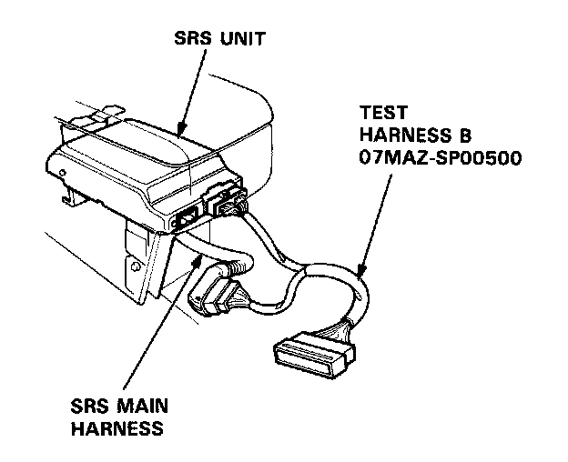
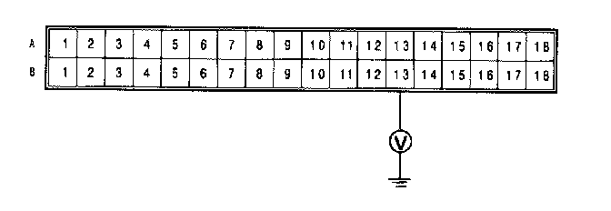

Failure Mode I
Mode I: Blown SRS No.7 fuse, or open in the wire.
NOTE: The original radio has a coded theft protection circuit. Be sure to get the code number before disconnecting the battery cables.
1. Check the SRS No.7 (10A) fuse in the dash fuse box. If it's OK, go to step 2. If it's blown, replace it with a new 1OA fuse, then turn the ignition switch ON:
- If the fuse doesn't blow, go on to step 2.
- If the fuse blows, troubleshoot as necessary to find the short.
2. Before disconnecting any part of the SRS wire harness, disconnect both the negative and positive battery cables. Then install the short connectors - refer to "Short Connector Installation" procedure.
3. Connect Test Harness B between the SRS unit and the SRS main harness 18-P connector.

4. Reconnect the positive and negative cables to the battery.
5. Measure the voltage between the B13 terminal and body ground with the ignition switch ON.

- If there is battery voltage, the SRS unit is faulty. Replace it and recheck the voltages according to the chart in the "Indicator Stays On Continuously" procedure.
- If there is less than battery voltage, the SRS main harness is faulty. Replace it and recheck the voltages according to the chart in the "Indicator Stays On Continuously" procedure.